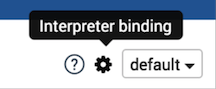
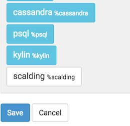
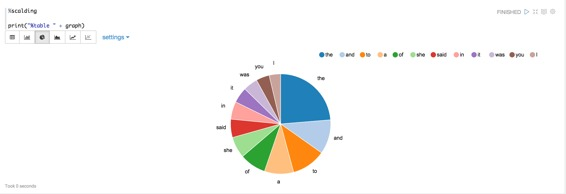

Scalding 解释器
原文链接 : http://zeppelin.apache.org/docs/0.7.2/interpreter/scalding.html
译文链接 : http://www.apache.wiki/pages/viewpage.action?pageId=10030908
Scalding是一个用于编写MapReduce工作的开源Scala库。
构建Scalding 解释器
您必须首先通过启用烫伤配置文件来构建Scalding解释器，如下所示：
mvn clean package -Pscalding -DskipTests
启用Scalding 解释器
在笔记本电脑，使用Scalding解释器，点击齿轮图标，选择Scalding，并创下保存。


配置解释器
Scalding解释器有两种模式：
- 本地
- HDFS
在本地模式下，您可以访问本地服务器上的文件，并在本地完成Scalding转换。
在hdfs模式下，您可以访问HDFS中的文件，并且烫印转换将以hadoop map-reduce作业运行。
Zeppelin配有预配置的Scalding解释器在本地模式。
要在hdfs模式下运行Scalding解释器，您必须执行以下操作：
使用ZEPPELIN_CLASSPATH_OVERRIDES设置类路径
在conf / zeppelin env.sh中，您必须将ZEPPELIN CLASSPATH_OVERRIDES _设置_为“hadoop classpath”的内容，以及使用您的烫伤命令所需的自定义jar文件的目录。
设置Scalding复制的参数
默认参数为：“--local --repl”
对于hdfs模式，您需要添加：“--hdfs --repl”
如果要添加自定义jar，则需要添加：“-libjars directory / ：directory / ”
对于reducer估计，您需要添加以下内容：“-Dscalding.reducer.estimator.classes = com.twitter.scalding.reducer_estimation.InputSizeReducerEstimator”
设置max.open.instances
如果要控制最大数量的打开解释器，您必须为note选项选择“scoped”解释器，并设置max.open.instances参数。
测试解释器
本地模式
例如，通过使用“ 爱丽丝梦游仙境”教程，我们将计算单词（当然！），并绘制书中前十个单词的图形。
%scalding
import scala.io.Source
// Get the Alice in Wonderland book from gutenberg.org:
val alice = Source.fromURL("http://www.gutenberg.org/files/11/11.txt").getLines
val aliceLineNum = alice.zipWithIndex.toList
val alicePipe = TypedPipe.from(aliceLineNum)
// Now get a list of words for the book:
val aliceWords = alicePipe.flatMap { case (text, _) => text.split("\\s+").toList }
// Now lets add a count for each word:
val aliceWithCount = aliceWords.filterNot(_.equals("")).map { word => (word, 1L) }
// let's sum them for each word:
val wordCount = aliceWithCount.group.sum
print ("Here are the top 10 words\n")
val top10 = wordCount
.groupAll
.sortBy { case (word, count) => -count }
.take(10)
top10.dump
%scalding
val table = "words\t count\n" + top10.toIterator.map{case (k, (word, count)) => s"$word\t$count"}.mkString("\n")
print("%table " + table)
如果您点击饼图的图标，您应该可以看到如下图表：

HDFS模式
测试模式
%scalding
mode
此命令应打印：
res4: com.twitter.scalding.Mode = Hdfs(true,Configuration: core-default.xml, core-site.xml, mapred-default.xml, mapred-site.xml, yarn-default.xml, yarn-site.xml, hdfs-default.xml, hdfs-site.xml)
测试HDFS读取
val testfile = TypedPipe.from(TextLine("/user/x/testfile"))
testfile.dump
此命令应打印hdfs文件/user/x/testfile 的内容。
测试map-reduce job****
val testfile = TypedPipe.from(TextLine("/user/x/testfile"))
val a = testfile.groupAll.size.values
a.toList
该命令应该创建一个map reduce作业。
未来的工作
- 更好的用户反馈（hadoop url，进度更新）
- 能够取消工作
- 能够动态加载jar而不重新启动解释器
- 多用户可扩展性（在不同服务器上运行烫伤解释器）